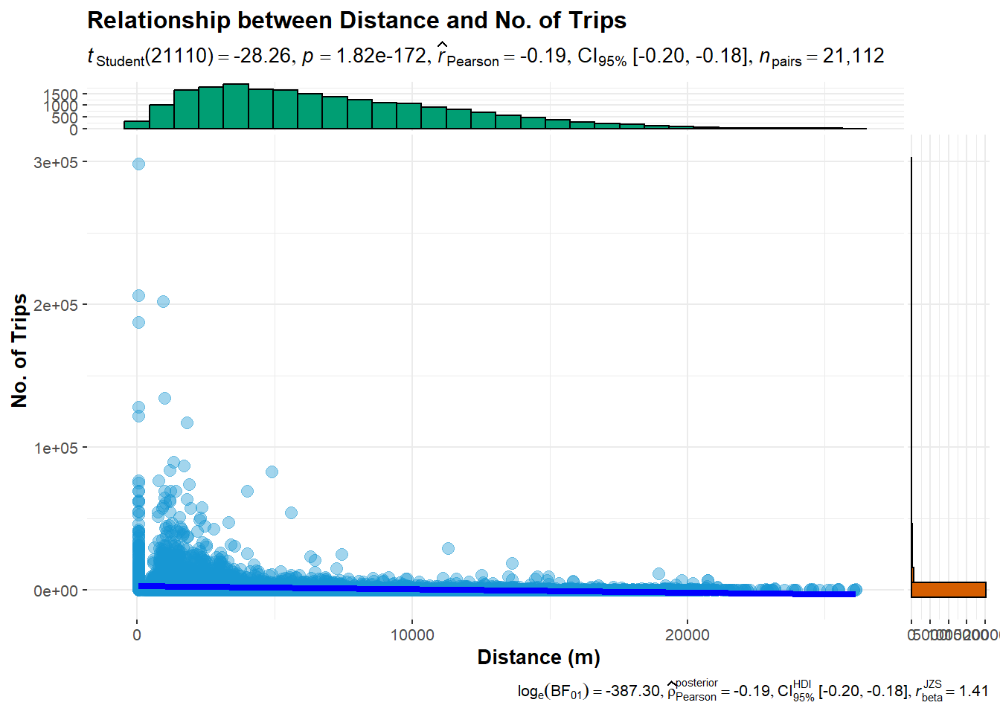

pacman::p_load(tmap, sf, sp, DT,
performance, reshape2,
ggpubr, tidyverse, ggplot2, ggstatsplot, urbnthemes)In-class Ex 3
Spatial Interaction Models
Spatial Interaction Models (SIMs) are mathematical models for estimating flows between spatial entities developed by Alan Wilson in the late 1960s and early 1970, with considerable uptake and refinement for transport modelling since then Boyce and Williams (2015).
There are four main types of traditional SIMs (Wilson 1971):
- Unconstrained
- Production-constrained
- Attraction-constrained
- Doubly-constrained
Calibrating Flows:
Ordinary least square (OLS), log-normal, Poisson and negative binomial (NB) regression methods have been used extensively to calibrate OD flow models by processing flow data as different types of dependent variables. This exercise will focus on using appropriate R packages to calibrate SIMs by using the four regression methods.
1 Loading R packages
- performance for Assessment, Comparison and Testing of Statistical Models
- reshape2 for handling matrix dataframes
- ggpubr for composing multiplots
2 Importing the Data
The following data files will be used for the study:
- od_data.rds: weekday morning peak passenger flows at planning subzone level
- mpsz.rds: URA Master Plan 2019 Planning Subzone boundary
2.1 mpsz
mpsz <- read_rds("data/rds/mpsz.rds")
mpszSimple feature collection with 332 features and 6 fields
Geometry type: MULTIPOLYGON
Dimension: XY
Bounding box: xmin: 2667.538 ymin: 15748.72 xmax: 56396.44 ymax: 50256.33
Projected CRS: SVY21 / Singapore TM
First 10 features:
SUBZONE_N SUBZONE_C PLN_AREA_N PLN_AREA_C REGION_N
1 MARINA EAST MESZ01 MARINA EAST ME CENTRAL REGION
2 INSTITUTION HILL RVSZ05 RIVER VALLEY RV CENTRAL REGION
3 ROBERTSON QUAY SRSZ01 SINGAPORE RIVER SR CENTRAL REGION
4 JURONG ISLAND AND BUKOM WISZ01 WESTERN ISLANDS WI WEST REGION
5 FORT CANNING MUSZ02 MUSEUM MU CENTRAL REGION
6 MARINA EAST (MP) MPSZ05 MARINE PARADE MP CENTRAL REGION
7 SUDONG WISZ03 WESTERN ISLANDS WI WEST REGION
8 SEMAKAU WISZ02 WESTERN ISLANDS WI WEST REGION
9 SOUTHERN GROUP SISZ02 SOUTHERN ISLANDS SI CENTRAL REGION
10 SENTOSA SISZ01 SOUTHERN ISLANDS SI CENTRAL REGION
REGION_C geometry
1 CR MULTIPOLYGON (((33222.98 29...
2 CR MULTIPOLYGON (((28481.45 30...
3 CR MULTIPOLYGON (((28087.34 30...
4 WR MULTIPOLYGON (((14557.7 304...
5 CR MULTIPOLYGON (((29542.53 31...
6 CR MULTIPOLYGON (((35279.55 30...
7 WR MULTIPOLYGON (((15772.59 21...
8 WR MULTIPOLYGON (((19843.41 21...
9 CR MULTIPOLYGON (((30870.53 22...
10 CR MULTIPOLYGON (((26879.04 26...as_Spatial() will be used to convert mpsz from sf tibble data frame to a SpatialPolygonsDataFrame (sp object)
mpsz_sp <- mpsz %>%
as_Spatial()
mpsz_spclass : SpatialPolygonsDataFrame
features : 332
extent : 2667.538, 56396.44, 15748.72, 50256.33 (xmin, xmax, ymin, ymax)
crs : +proj=tmerc +lat_0=1.36666666666667 +lon_0=103.833333333333 +k=1 +x_0=28001.642 +y_0=38744.572 +ellps=WGS84 +towgs84=0,0,0,0,0,0,0 +units=m +no_defs
variables : 6
names : SUBZONE_N, SUBZONE_C, PLN_AREA_N, PLN_AREA_C, REGION_N, REGION_C
min values : ADMIRALTY, AMSZ01, ANG MO KIO, AM, CENTRAL REGION, CR
max values : YUNNAN, YSSZ09, YISHUN, YS, WEST REGION, WR 3 Computing the distance matrix
3.1 Creating distance matrix frame
spDists() of sp package will be used to compute the Euclidean distance between the centroids of the planning subzones.
Centroids of each planning subzones are used as points of origin and destination for easy calculations.
dist <- spDists(mpsz_sp,
# df is already polygon, so set longlat as FALSE
longlat = FALSE)head(dist, n=c(10, 10)) [,1] [,2] [,3] [,4] [,5] [,6] [,7]
[1,] 0.000 3926.0025 3939.108 20252.964 2989.9839 1431.330 19211.836
[2,] 3926.003 0.0000 305.737 16513.865 951.8314 5254.066 16242.523
[3,] 3939.108 305.7370 0.000 16412.062 1045.9088 5299.849 16026.146
[4,] 20252.964 16513.8648 16412.062 0.000 17450.3044 21665.795 7229.017
[5,] 2989.984 951.8314 1045.909 17450.304 0.0000 4303.232 17020.916
[6,] 1431.330 5254.0664 5299.849 21665.795 4303.2323 0.000 20617.082
[7,] 19211.836 16242.5230 16026.146 7229.017 17020.9161 20617.082 0.000
[8,] 14960.942 12749.4101 12477.871 11284.279 13336.0421 16281.453 5606.082
[9,] 7515.256 7934.8082 7649.776 18427.503 7801.6163 8403.896 14810.930
[10,] 6391.342 4975.0021 4669.295 15469.566 5226.8731 7707.091 13111.391
[,8] [,9] [,10]
[1,] 14960.942 7515.256 6391.342
[2,] 12749.410 7934.808 4975.002
[3,] 12477.871 7649.776 4669.295
[4,] 11284.279 18427.503 15469.566
[5,] 13336.042 7801.616 5226.873
[6,] 16281.453 8403.896 7707.091
[7,] 5606.082 14810.930 13111.391
[8,] 0.000 9472.024 8575.490
[9,] 9472.024 0.000 3780.800
[10,] 8575.490 3780.800 0.000The resultant distance matrix shows the relative distances between each subzone centroid.
3.2 Labelling column and row headers
We first create a list, sz_names, sorted according to the the distance matrix by planning sub-zone code:
sz_names <- mpsz$SUBZONE_CNext, we assign SUBZONE_C to rows and columns for distance matrix matching
colnames(dist) <- paste0(sz_names)
rownames(dist) <- paste0(sz_names)head(dist, n=c(10, 10)) MESZ01 RVSZ05 SRSZ01 WISZ01 MUSZ02 MPSZ05 WISZ03
MESZ01 0.000 3926.0025 3939.108 20252.964 2989.9839 1431.330 19211.836
RVSZ05 3926.003 0.0000 305.737 16513.865 951.8314 5254.066 16242.523
SRSZ01 3939.108 305.7370 0.000 16412.062 1045.9088 5299.849 16026.146
WISZ01 20252.964 16513.8648 16412.062 0.000 17450.3044 21665.795 7229.017
MUSZ02 2989.984 951.8314 1045.909 17450.304 0.0000 4303.232 17020.916
MPSZ05 1431.330 5254.0664 5299.849 21665.795 4303.2323 0.000 20617.082
WISZ03 19211.836 16242.5230 16026.146 7229.017 17020.9161 20617.082 0.000
WISZ02 14960.942 12749.4101 12477.871 11284.279 13336.0421 16281.453 5606.082
SISZ02 7515.256 7934.8082 7649.776 18427.503 7801.6163 8403.896 14810.930
SISZ01 6391.342 4975.0021 4669.295 15469.566 5226.8731 7707.091 13111.391
WISZ02 SISZ02 SISZ01
MESZ01 14960.942 7515.256 6391.342
RVSZ05 12749.410 7934.808 4975.002
SRSZ01 12477.871 7649.776 4669.295
WISZ01 11284.279 18427.503 15469.566
MUSZ02 13336.042 7801.616 5226.873
MPSZ05 16281.453 8403.896 7707.091
WISZ03 5606.082 14810.930 13111.391
WISZ02 0.000 9472.024 8575.490
SISZ02 9472.024 0.000 3780.800
SISZ01 8575.490 3780.800 0.000The resultant distance matrix now has planning subzone code as row and column labels.
To plot the flows, we need a tibble form of the distance matrix to show the attributes of each trip (origin-destination).
3.3 Dealing with 0-value intra-zonal distances
The diagonals of the distance matrix are 0, and represent intra-zonal distances. We append a constant value to replace the intra-zonal distance of 0.
melt() converts the matrix into a long dataframe, where each row reprsents a flow (origin-destination) pair
distPair <- melt(dist) %>%
rename(dist = value,
orig = Var1,
dest = Var2
)
head(distPair, 10) orig dest dist
1 MESZ01 MESZ01 0.000
2 RVSZ05 MESZ01 3926.003
3 SRSZ01 MESZ01 3939.108
4 WISZ01 MESZ01 20252.964
5 MUSZ02 MESZ01 2989.984
6 MPSZ05 MESZ01 1431.330
7 WISZ03 MESZ01 19211.836
8 WISZ02 MESZ01 14960.942
9 SISZ02 MESZ01 7515.256
10 SISZ01 MESZ01 6391.342select and find out the minimum value of the distance by using summary()
distPair %>%
filter(dist > 0) %>%
summary() orig dest dist
MESZ01 : 331 MESZ01 : 331 Min. : 173.8
RVSZ05 : 331 RVSZ05 : 331 1st Qu.: 7149.5
SRSZ01 : 331 SRSZ01 : 331 Median :11890.0
WISZ01 : 331 WISZ01 : 331 Mean :12229.4
MUSZ02 : 331 MUSZ02 : 331 3rd Qu.:16401.7
MPSZ05 : 331 MPSZ05 : 331 Max. :49894.4
(Other):107906 (Other):107906 The minimum distance recorded is 173.8
Next, a constant distance value of 50m is assigned to intra-zonal distance (less that minimum inter-zonal distance of 173.8)
distPair$dist <- ifelse(distPair$dist == 0,
50, distPair$dist)summary(distPair) orig dest dist
MESZ01 : 332 MESZ01 : 332 Min. : 50
RVSZ05 : 332 RVSZ05 : 332 1st Qu.: 7097
SRSZ01 : 332 SRSZ01 : 332 Median :11864
WISZ01 : 332 WISZ01 : 332 Mean :12193
MUSZ02 : 332 MUSZ02 : 332 3rd Qu.:16388
MPSZ05 : 332 MPSZ05 : 332 Max. :49894
(Other):108232 (Other):108232 The minimum distance recorded is 50, our intra-zonal distance.
4 Preparing the Flow~ data
od_data <- read_rds("data/rds/od_data.rds")We compute the total passenger trip between and within planning subzones by using the code chunk below:
flow_data <- od_data %>%
rename(TRIPS = MORNING_PEAK)head(flow_data, 10)# A tibble: 10 × 3
ORIGIN_SZ DESTIN_SZ TRIPS
<chr> <chr> <dbl>
1 AMSZ01 AMSZ01 2287
2 AMSZ01 AMSZ02 10057
3 AMSZ01 AMSZ03 13211
4 AMSZ01 AMSZ04 2836
5 AMSZ01 AMSZ05 6913
6 AMSZ01 AMSZ06 2086
7 AMSZ01 AMSZ07 1558
8 AMSZ01 AMSZ08 2451
9 AMSZ01 AMSZ09 2047
10 AMSZ01 AMSZ10 145We add 2 new fields into the flow_data dataframe,
- FlowNoIntra to keep intra-subzone number of trips as 0
- offset separated by intra-subzone flows
flow_data$FlowNoIntra <- ifelse(
flow_data$ORIGIN_SZ == flow_data$DESTIN_SZ,
0, flow_data$TRIPS)
flow_data$offset <- ifelse(
flow_data$ORIGIN_SZ == flow_data$DESTIN_SZ,
0.000001, 1)Before we can join flow_data and distPair, we need to convert data value type of ORIGIN_SZ and DESTIN_SZ fields of flow_data dataframe into factor data type.
flow_data <- flow_data %>%
mutate(
ORIGIN_SZ = as.factor(ORIGIN_SZ),
DESTIN_SZ = as.factor(DESTIN_SZ)
)Now, left_join() of dplyr will be used to flow_data dataframe and distPair dataframe
flow_data1 <- flow_data %>%
left_join (distPair,
by = c("ORIGIN_SZ" = "orig",
"DESTIN_SZ" = "dest"))5 Preparing Origin and Destination Attributes
pop <- read_csv("data/aspatial/pop.csv")pop <- pop %>%
left_join(mpsz,
by = c("PA" = "PLN_AREA_N",
"SZ" = "SUBZONE_N")) %>%
select(1:6) %>%
rename(SZ_NAME = SZ,
SZ = SUBZONE_C)flow_data1 <- flow_data1 %>%
left_join(pop,
by = c(ORIGIN_SZ = "SZ")
) %>%
rename(
ORIGIN_AGE7_12 = AGE7_12,
ORIGIN_AGE13_24 = AGE13_24,
ORIGIN_AGE25_64 = AGE25_64
) %>%
select(-c(PA, SZ_NAME))flow_data1 <- flow_data1 %>%
left_join(pop,
by = c(DESTIN_SZ = "SZ")
) %>%
rename(
DESTIN_AGE7_12 = AGE7_12,
DESTIN_AGE13_24 = AGE13_24,
DESTIN_AGE25_64 = AGE25_64
) %>%
select(-c(PA, SZ_NAME))write_rds(flow_data1, "data/rds/SIM_data2")6 Visualizing the dependent attributes
6.1 What is the distribution of trips?
set_urbn_defaults(style = "print")
ggplot(data = flow_data1,
aes(x = TRIPS)) +
geom_histogram()The distribution is highly right-skewed.
6.2 What is the correlation between distance and number of trips?
Next, we visualise the relation between the dependent variable and one of the key independent variable in Spatial Interaction Model – distance:
ggplot(data = flow_data1,
aes(x = dist,
y = TRIPS)) +
geom_point(
size = .5
) +
geom_smooth(method = lm)ggscatterstats(data = flow_data1, ## data frame from which variables are taken
x = dist, ## predictor/independent variable
y = TRIPS, ## dependent variable
xlab = "Distance (m)",
ylab = "No. of Trips",
title = "Relationship between Distance and No. of Trips")
Notice that their relationship hardly resemble linear relationship.
On the other hand, if we plot the scatter plot by using the log transformed version of both variables, we can see that their relationship is more resemble linear relationship.
ggplot(data = flow_data1,
aes(x = log(dist),
y = log(TRIPS))) +
geom_point(
size = .5
) +
geom_smooth(method = lm)